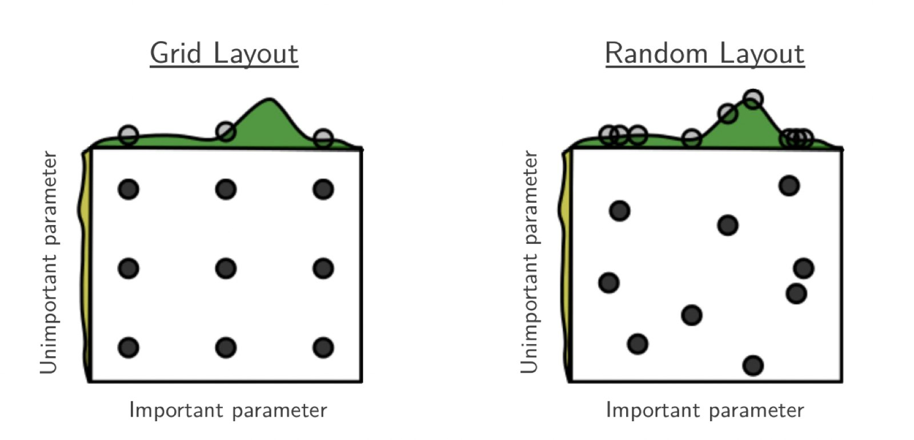
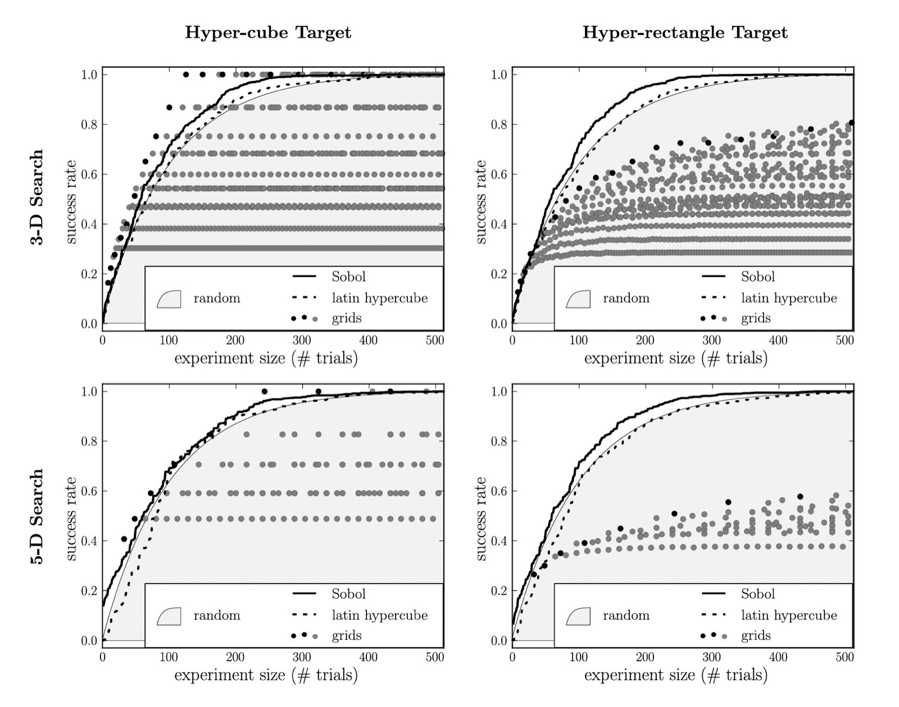

GridSearchCV versus RandomizedSearchCV
In any machine learning problem, we usually need to perform hyperparameter optimization to tune parameters in our model. Even though there are several methods to do it, two primary and popular method are the GridSearchCV and the RandomizedSearchCV. Yet, which one is the best method for our problem? This interesting paper reveals the benefits of using the RandomizedSearchCV.


Source
RandomSearchforHyper-ParameterOptimization
Summary
In general, RandomizedSearchCV is faster compared to GridSearchCV and it provides better results while running at the same iterations.
RandomizedSearchCV works better when some parameters are more dominant or important than others, it will focus on varying those dominant parameters rather than varying other parameters that are not significant.
Adding more parameters that do not influence the performance does not affect efficiency of the RandomizedSearchCV.
Generally, recommend using the RandomizedSearchCV over the GridSearchCV.
Other better options
There are some better methods using iterative selection process where all possible candidates are tested with a small amount of data at the first stage and it is fully evaluated in next stage. These methods are successive halving with grid search and random search.
Other improved methods might be Model-based optimization and Bayesian optimization that they usually learn from the past trials and use it to decide the next parameter to try, or they might have a separate machine learning model to predict what parameter to test next time. You can check more information in these packages.